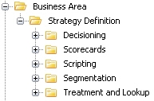

Importing SMG3 components
The SMG3 import functionality allows users to import components from Strategy Design Studio v.1 into a folder structure that mirrors the structure found in Strategy Design Studio v.1. The required project template is provided in the Content Gallery.
To consume a template and import SMG3 data
- In the Explorer window, right click on a solution, and select Add from template.
- From the Content Gallery, expand Base Product Templates and System Compositions, then select Strategy Management G3 Solution (or Strategy Management G3 Solution enabling Assisted Design, if you intend to create an Assisted Design project in the future).
- Click on the OK button. The folder structure is created. The structure mirrors the structure of the original Strategy Design Studio v.1 structure:
All folders are set up with the appropriate permissions; for example, the Global Data Universe folder allows just those components related to data models: Byte Array Physical Data Model, Java Object Physical Data Model, Logical Data Model, and Logical Data Source.
Publishing rules are also set up; for example, everything in the Global Data Universe folder is published to all the folders that need access to it, class sets are published to matrices, and so on.
- Now, we can import the Strategy Design Studio v.1 components. We start with the most basic components and work our way up to the more complex components.
- From the Explorer window, right click on the Global Data Universe folder and select Import.
- The Import wizard is initiated. The first screen, Select import source, is displayed. Locate and select the. xml file to import.
- From the Files of type field, select SMG3 Export Format:
- Click on the Next button to display the second screen of the Import wizard, Select components to import.
- The wizard indicates by a check mark the components libraries containing components that can be consumed into the Global Data Universe folder.
- Since we are for the moment only interested in importing components from the v.1 Global Data Universe, we will exclude the other component libraries:
Components that can be imported into this folder (allowed component types) are identified by a check mark .
Components that are not allowed types are identified by a
 .
. For a first time import of data, the Overwrite existing object column is not relevant, and all entries are
. - To exclude any component from the import, click on the check mark and change it to an
 .
. - Click on the Next button to display the third screen of the Import wizard, Confirm choices. Review the name and the location of the imported file.
- Click on the Next button to display the fourth screen of the wizard, Import job summary.
- Click on the Finish button to import the SMG3 data.
The import monitor is displayed on the bottom right of the screen:

To cancel the import process, click on the cancel button
 and then click on the Yes button at the prompt.
and then click on the Yes button at the prompt.When the import is finished, the Import complete message is displayed.
We have imported our Global Data Universe components. Now we will import components into the local Data Universe.
- In the Libraries we have our local Data Universe:
- We go through the import process again, only this time we start in the Data Universe folder, and deselect all but the Data Universe components:
- We start with the data universe components first, since the other components reference the data definitions. From this point, we continue to import the Strategy Design Studio v.1 components in order of complexity.
- Class sets are next; the import wizard shows what can be imported into the Class Sets folder:
- When we import matrices and open one in the Strategy Design Studio, we can see that the link to the class set that goes with that matrix is maintained.


{kind=link}
{kind=link}
{kind=link}
{kind=link}
{kind=link}
{kind=link}
{kind=link}
Import the remaining component libraries in order, so as to maintain the component hierarchy:
- Data Universe. Global and Business Area specific.
- Index Tables
- Class Sets
- Matrices
- Sub-populations
- User Functions
- Derived Data Scripts
- Policy Rules
- Adverse Reason Codes
- Scorecards
- Decision Categories
- Decision Reason Codes
- Policy Rule Sets
- Segmentation Trees
- Action Setters
- Strategy Tables. A Strategy Grid assignment will be imported as a referenced matrix in the Treatment Tree.
- Business Objective Flow. Other components will be created; these can be moved into the correct folders following import, but in order for the import to complete, these components must be allowed in the business area folder for the duration of the import.
See here for the one-to-one correspondence between components in Strategy Design Studio v.1 and those created in Strategy Design Studio v.2.x.
The SMG3 import functionality allows users to import components from Strategy Design Studio v.1 into a folder structure that follows the Strategy Design Studio v.2.x design philosophy, where components are grouped together logically. The required project template is provided in the Content Gallery.
To consume a template and import SMG3 data
- In the Explorer window, right click on a solution, and select Add from template.
- From the Content Gallery, expand Base Product Templates and System Compositions, then select Decision Management Solution (or Decision Management Solution enabling Assisted Design, if you intend to create an Assisted Design project in the future).
- Click on the OK button. The folder structure is created. The structure follows the v.2.x design philosophy:
{kind=link}

All folders are set up with the appropriate permissions. Publishing rules are also set up; for example, everything in the Business Area folder is published to all the folders that need access to it.
- We will be re-factoring the v.1 system into a the more compact Strategy Design Studio v.2.x structure, where like components are grouped together logically; so for example, when we look in the Scorecards folder, we see that it allows all components that are unique to scorecards:
- We import components in order, starting with global data; but we can import all global component data into one folder. So, for example, when we import to the Business Area folder, we might choose to import not only the global data sources, but other components such as class sets that are shared globally as well. Note that this will require us to first use Manage allowed component types to add allowed types to the folder.
- From the Explorer window, right click on the Business Area folder and select Import.
- The Import wizard is initiated. The first screen, Select import source, is displayed. Locate and select the .xml file to import.
- From the Files of type field, select SMG3 Export Format (.*xml):
- Click on Next to display the second screen of the Import wizard, Select components to import.
- Here we can select to import data sources and all other components that are to be shared globally:
- The wizard indicates by a check mark the components and component libraries that can be consumed into the Strategy Definition folder.
- To exclude any component from the import, click on the check mark and change it to an .
- To set blank Value Setter component outcomes to Do Nothing, check the If the Value Setter component outcome value is blank, set the value to "Do Nothing" selection box at the bottom of the wizard.
- Click on the Next button to display the fourth screen of the wizard, Import job summary.
- Click on the Finish button to import the SMG3 data.
The import monitor is displayed on the bottom right of the screen:
To cancel the import process, click on the cancel button
and click on the Yes button at the prompt.When the import is finished, the Import complete message is displayed.
We have imported our global components. Now we will continue to import data into the remaining folders.
- In the Segmentation folder, for example, we would want to import Class Sets, Matrices and Sub-populations all together.
{kind=link}
{kind=link}
{kind=link}
Import the remaining component libraries in an appropriate order, so as to maintain the component hierarchy:
- Data Universe. Global and Business Area specific.
- Class Sets (into Segmentation)
- Index Tables (into Treatment and Lookup)
- Matrices (into Segmentation)
- Sub-populations (into Segmentation)
- User Functions (into Scorecards / Scripting)
- Derived Data Scripts (into Scripting)
- Policy Rules (into Policy Rules)
- Adverse Reason Codes (into Scorecards)
- Scorecards (into Scorecards)
- Decision Categories (into Decisioning)
- Decision Reason Codes (into Policy Rules)
- Policy Rule Sets (into Decisioning)
- Segmentation Trees (into Segmentation Trees)
- Action Setters (into Treatment and Lookup)
- Strategy Tables (into Treatment and Lookup)
- Business Objective Flow (into Strategy Definition). Other components will be created; these can be moved into the correct folders following import, but in order for the import to complete, these components must be allowed in the Strategy Definition folder for the duration of the import.
See here for the one-to-one correspondence between components in Strategy Design Studio v.1 and those created in Strategy Design Studio v.2.x.
The SMG3 import function can take note of certain errors while otherwise successfully importing components. For example, importing components in isolation, e.g., importing Class Sets without their linked characteristics, will result in error messages while the Class Set components are imported. In such cases, the following message is displayed:
{kind=link}
The output window will display the errors that were identified during import:
{kind=link}
When User Defined Functions, Boolean Expressions, Policy Rules, Derived Data Scripts or scripts contained in the Treatment Table Design are imported, the script will be passed through the script format checking service. Should it be required, the format of the script will be updated in the editor making it easier to read and any syntax errors will be corrected. Any script compilation errors that still exist and cannot be fixed will be written to the Import - Output window.
A Strategy Design Studio v.1 .xml file can be re-imported into a Strategy Design Studio v.2.x folder; for example, if it contains updated information. The user has the option of overwriting existing components or of creating copies of existing components.
To re-import SMG3 data
- From the Explorer window, right click on the folder to import to and select Import.
- The Import wizard is initiated. The first screen, Select import source, is displayed. Locate and select the .xml file to import.
- From the Files of type field, select SMG3 Export Format:
- Click on the Next button to display the second screen of the Import wizard, Select components to import. The components available for import are listed on the screen:
By default, all existing objects will be overwritten.
- To keep an existing object (or set of objects) and import a new version or copy of the object, click on the in the New column to change it to a check mark . After import, the new version of the component will be identified in the Explorer window with a number (in parentheses) after the name.
Objects not previously imported will have a check mark in the New column, and an N/A in the Overwrite Existing Object column.
If one component references another component (such as a scorecard referencing a class set), and a newer version of the referenced component is imported as New and identified with a number (e.g., class set(1)), then the referencing component (e.g., the scorecard) will still reference the original component (class set) and not the newer version (class set(1)). If the newer version of the referenced component is brought in as Overwrite Existing Object, this problem will not arise, since the names of the old component and the new component will be identical. - Click on the Next button to display the third screen of the Import wizard, Confirm choices. Review the name and the location of the imported file.
- Click on the Next button to display the fourth screen of the wizard, Import job summary.
- Click on the Finish button to import the SMG3 data.
{kind=link}
{kind=link}
The import monitor is displayed on the bottom right of the screen:

To cancel the import process, click on the cancel button  and click on the Yes button at the prompt.
and click on the Yes button at the prompt.
When the import is finished, the Import complete message is displayed.
Imported components are all listed under the folder in the Explorer window.